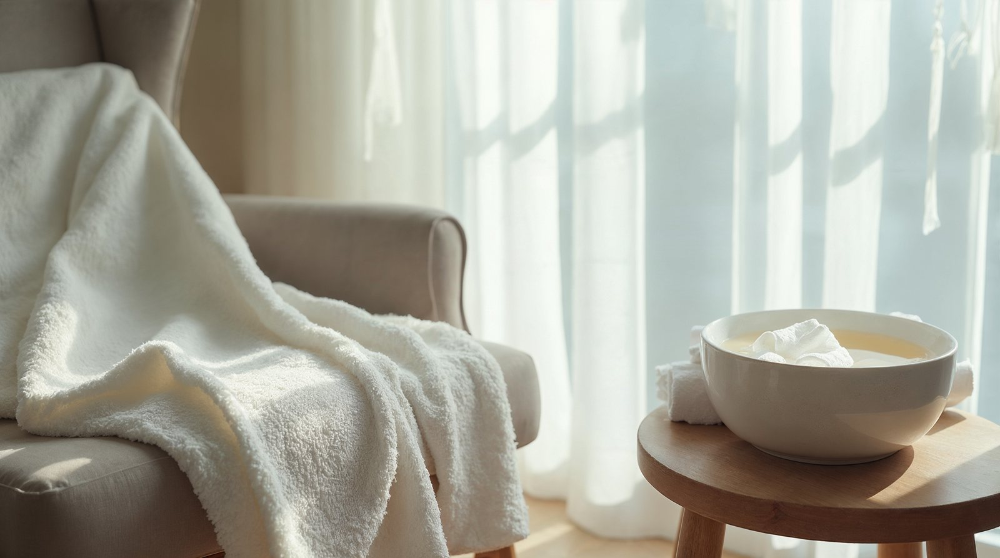
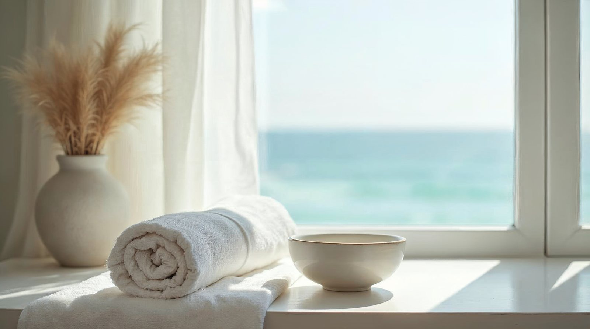
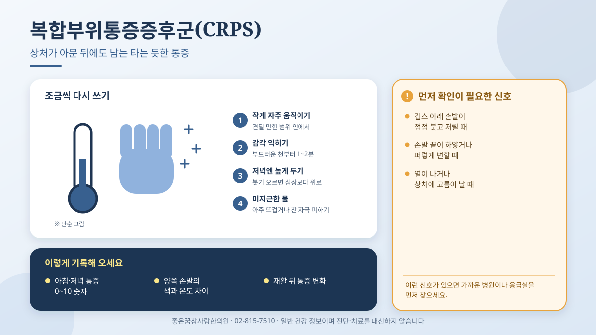

이종호 한의사 감수좋은꿈참사랑한의원 대표원장 (한의사 면허번호 19769)발행 2026-11-26 · 수정 2026-11-26
이 글의 차례
양말을 신으려고 발을 내미는데, 천이 피부에 스치기만 해도 화끈하게 쓰라립니다. 깁스를 푼 지 몇 주가 지났고 뼈는 잘 붙었다는 말도 들었습니다. 그런데 발은 오히려 더 붓고, 한쪽만 붉었다가 퍼렇게 변하기를 반복합니다. 이불이 닿는 것조차 싫어서 밤에는 발을 이불 밖으로 내놓고 잡니다.
진료실에서 이런 이야기를 꺼내는 분들은 대개 같은 말을 덧붙이십니다. "다친 건 다 나았다는데, 왜 이렇게 아픈지 아무도 설명을 못 해 줘요." 검사에서 뼈와 인대는 괜찮다고 하니, 주변에서는 엄살처럼 보는 것 같아 더 서럽다고 하십니다.
다친 정도에 비해 통증이 지나치게 크고 오래가며, 피부의 색과 온도, 붓기, 땀, 털과 손발톱까지 변하는 상태를 복합부위통증증후군, 영어 머리글자로 CRPS라고 부릅니다. 엄살이 아니라 통증을 전달하고 조절하는 신경 체계가 지나치게 예민해진 상태로 설명합니다.
이 글에서는 CRPS가 어떤 모습으로 나타나는지, 흔한 회복기 통증과 어떻게 다른지, 통증 클리닉이나 재활의학과 치료와 함께 한의원에서 무엇을 살필 수 있는지를 정리해 보겠습니다.

CRPS는 어떤 모습으로 나타나나요
가장 큰 특징은 다친 정도에 어울리지 않는 통증입니다. 타는 듯하다, 쓰라리다, 칼로 긋는 것 같다, 얼음물에 담근 것처럼 시리다고 표현하시는 분이 많습니다. 살짝 스치는 옷이나 바람, 물줄기에도 통증이 크게 느껴지기도 합니다.
통증과 함께 피부에 눈에 보이는 변화가 생깁니다. 한쪽 손발이 반대쪽보다 붉거나 퍼렇고, 만져 보면 뜨겁거나 반대로 차갑습니다. 붓기가 오르내리고, 땀이 유난히 많거나 적어지기도 합니다.
시간이 지나면 피부가 얇고 반들반들해지거나, 털과 손발톱이 빨리 자라거나 거꾸로 잘 안 자라는 변화가 보이기도 합니다. 아파서 움직이지 않다 보면 관절이 굳고 근육이 가늘어지는 일도 겹칩니다.
통증이 처음 다친 자리에서 시작해 손 전체, 발 전체로 넓게 퍼지는 것도 특징입니다. 손목을 다쳤는데 손가락과 팔꿈치까지 아프고, 발목을 다쳤는데 발등과 종아리까지 화끈거리는 식입니다. 신경 하나가 지나는 길을 따르지 않고 한 덩어리 지역으로 번진다고 해서 '부위'라는 이름이 붙었습니다.
왜 상처가 아물어도 통증이 남는 걸까요
보통은 다친 자리가 아물면 통증 신호도 함께 잦아듭니다. 그런데 어떤 경우에는 다친 뒤 켜진 통증 경보가 꺼지지 않고, 오히려 더 예민하게 맞춰집니다. 말초 신경과 척수, 뇌에 이르는 통증 길이 모두 작은 자극에도 크게 반응하도록 바뀌는 것으로 설명합니다.
피부색과 온도, 땀이 변하는 것은 혈관과 땀샘을 조절하는 자율신경이 함께 흔들리기 때문입니다. 염증 반응이 오래 이어지는 것도 붓기와 열감에 한몫합니다. 그래서 CRPS는 통증만의 문제가 아니라 신경, 혈관, 면역이 함께 엉킨 상태로 봅니다.
골절, 수술, 삐끗함, 주사처럼 비교적 작은 일 뒤에도 생길 수 있고, 누구에게 생길지 미리 알기는 어렵습니다. 깁스나 보조기로 오래 움직이지 못했던 경우, 다친 직후 통증이 유난히 컸던 경우에 조금 더 자주 보인다고 알려져 있습니다.
통증이 오래가면 뇌가 그 손발을 그리는 지도도 흐릿해진다고 설명합니다. 아픈 손이 실제보다 크게 느껴지거나, 내 손 같지 않다고 말씀하시는 분이 있는 것도 그 때문입니다. 거울을 이용한 재활이 쓰이는 것도 이 지도를 다시 또렷하게 하려는 뜻입니다.
한의학에서는 이렇게 막히고 뜨겁고 붓는 모습을 기혈이 잘 돌지 못하는 어혈과 열의 모습으로 설명해 왔습니다. 이는 진찰할 때 쓰는 전통적인 묘사이지 진단명을 대신하지 않습니다. 진료실에서는 이 관점을 참고해 손발의 온도와 붓기, 잠과 긴장을 함께 봅니다.
흔한 회복기 통증과 어떻게 다른가요
깁스를 풀고 나면 누구나 한동안 손발이 붓고 뻣뻣하며 움직일 때 아픕니다. 이런 회복기 통증은 대개 움직임을 늘려 가면서 몇 주에 걸쳐 조금씩 줄어듭니다. 아픈 자리도 다친 곳 주변에 머무는 경우가 많습니다.
CRPS가 의심되는 경우는 흐름이 다릅니다. 시간이 갈수록 통증이 오히려 커지거나, 스치기만 해도 아프거나, 색과 온도 변화가 뚜렷하거나, 통증이 다친 곳을 넘어 넓게 퍼집니다. 이런 모습이 겹치면 미루지 말고 진료를 받아 보시는 것이 좋습니다.
손발 저림이 주된 증상이라면 손목터널증후군이나 목·허리 디스크처럼 신경이 눌리는 문제일 수도 있습니다. 당뇨가 있다면 말초신경병증도 함께 살펴야 합니다. 이런 상태들은 신경이 지나는 길을 따라 증상이 나타나는 경우가 많아, 넓게 번지는 CRPS와 구분하는 단서가 됩니다.
진단은 통증 클리닉이나 재활의학과, 신경과에서 증상과 진찰 소견을 모아 내립니다. 하나의 검사로 딱 잘라 말하기 어려운 경우가 많아서, 다친 뒤 어떤 변화가 언제 생겼는지 기록해 두시면 진단에 큰 도움이 됩니다.
일찍 움직이는 것이 왜 중요한가요
CRPS에서는 아프니까 쓰지 않고, 쓰지 않으니 더 굳고 예민해지는 고리가 쉽게 만들어집니다. 그래서 통증 클리닉이나 재활의학과에서는 통증을 조절하면서 손발을 조금씩 쓰게 하는 재활을 중요하게 봅니다.
약물, 신경 차단 주사, 재활 치료, 거울 치료처럼 여러 방법을 함께 쓰는 경우가 많습니다. 어떤 방법을 쓸지는 담당 선생님이 상태를 보고 정합니다. 처방받은 약은 통증이 덜하다고 혼자 줄이거나 멈추지 않으셔야 합니다.
움직임은 '아프지 않을 때까지 기다렸다가'가 아니라 '견딜 만한 범위 안에서 조금씩'이 원칙입니다. 손가락 하나를 천천히 굽혔다 펴는 것, 발가락으로 수건을 살짝 끌어당기는 것처럼 작은 동작이라도 날마다 이어 가는 것이 쌓입니다.

깁스나 수술 뒤에 미리 살펴 둘 것이 있을까요
CRPS를 완전히 막는 방법은 알려져 있지 않지만, 다친 뒤 초기에 살펴 두면 좋은 것들은 있습니다. 깁스나 보조기를 하고 있는 동안에도 담당 선생님이 허락한 범위에서 손가락과 발가락, 깁스 밖의 관절을 자주 움직여 두는 것이 그중 하나입니다.
깁스 안에서 통증이 점점 커지거나, 손발 끝 색이 이상하거나, 너무 꽉 조이는 느낌이 들면 다음 예약일을 기다리지 말고 깁스를 한 병원에 알리세요. 깁스를 다시 맞추는 것만으로 해결되는 경우도 있습니다.
깁스를 푼 뒤 몇 주 동안은 붓기와 색, 통증의 흐름을 가볍게 적어 두시길 권합니다. 날이 갈수록 줄어드는 흐름이면 회복기 통증일 가능성이 높고, 오히려 커지거나 퍼지는 흐름이면 빨리 진료를 받아 보시는 것이 좋습니다. 일찍 알아차리고 재활을 시작할수록 손발을 다시 쓰는 데 도움이 된다고 알려져 있습니다.
통증이 심해 쓰지 않던 손발은 생각보다 빨리 근육이 빠집니다. 아픈 쪽을 아예 쓰지 않기보다 컵 들기, 단추 채우기, 몇 걸음 걷기처럼 일상 동작에 조금씩 다시 끼워 넣는 것을 목표로 잡아 보세요.
먼저 이렇게 여쭙니다
처음 오시면 저는 대략 이런 순서로 여쭙니다. 미리 생각해 오시면 이야기가 훨씬 수월해집니다.
- 처음 다친 일은 무엇이었고, 언제부터 통증이 달라졌나요?
- 통증은 어떤 느낌인가요? 타는 듯한지, 시린지, 찌르는 듯한지요.
- 옷이나 이불, 바람이 스치기만 해도 아픈가요?
- 아픈 쪽 손발의 색과 온도, 붓기가 반대쪽과 다른가요?
- 통증 클리닉이나 재활의학과에서 진단이나 치료를 받고 계신가요?
- 드시는 약과 주사 치료 일정은 어떻게 되나요?
- 잠은 어떠신가요? 통증 때문에 깨거나 잠들기 어려운가요?
모든 질문에 정확히 답하지 못하셔도 괜찮습니다. 아픈 쪽과 반대쪽 손발을 나란히 놓고 찍은 사진을 날짜별로 몇 장 가져오시면 색과 붓기의 변화를 함께 볼 수 있습니다. 사진은 같은 장소, 같은 조명에서 찍으시면 비교하기가 훨씬 쉽습니다.
일상에서 먼저 해 볼 수 있는 것
생활 관리의 목표는 통증을 없애는 것이 아니라, 예민해진 손발이 조금씩 일상의 자극에 다시 익숙해지도록 돕는 것입니다. 무리하지 않는 선에서 하나씩 시도해 보세요.
- 아프지 않은 범위에서 손가락, 발가락을 하루 여러 번 천천히 움직이기
- 부드러운 천, 수건, 조금 거친 천 순서로 피부를 살살 쓸어 보며 감각에 익숙해지기
- 붓기가 오르는 저녁에는 손발을 심장보다 조금 높게 두고 쉬기
- 아주 뜨겁거나 차가운 물은 피하고 미지근한 물로 씻기
- 담배는 손발 혈관을 좁게 만드니 끊는 쪽으로 상의하기
- 잠드는 시각을 일정하게 지키고, 잠들기 전 숨을 길게 내쉬기
감각에 익숙해지는 연습은 처음 1~2분처럼 아주 짧게 시작하세요. 통증이 크게 올라가면 한 단계 부드러운 천으로 돌아가면 됩니다. 매일 조금씩, 견딜 만한 정도를 지키는 것이 한 번에 많이 하는 것보다 낫다고 여겨집니다.
CRPS는 마음을 크게 지치게 합니다. 통증이 오래가면 잠이 무너지고, 잠이 무너지면 통증이 더 크게 느껴집니다. 불안이나 우울감이 함께 오는 것은 이상한 일이 아니니, 힘든 마음도 진료실에서 편하게 말씀해 주세요.
한의원에서 함께 살필 수 있는 경우
- 통증 클리닉이나 재활 치료를 받으면서 손발 시림과 붓기가 따로 남는 경우
- 아픈 쪽을 감싸느라 목, 어깨, 허리가 함께 굳어 가는 경우
- 통증으로 잠이 얕아지고 긴장이 이어지는 경우
- 소화가 떨어지고 몸 전체가 지친 느낌이 드는 경우
좋은꿈참사랑한의원에 오시면 먼저 아래 '먼저 확인이 필요한' 신호가 없는지부터 봅니다. 그다음 맥을 짚고, 아픈 손발을 무리하게 만지지 않으면서 색과 온도, 붓기를 반대쪽과 비교합니다. 아픈 쪽을 감싸느라 생긴 다른 부위의 긴장도 함께 살핍니다.
진찰한 내용을 바탕으로 침, 온열 관리, 한약 상담 가운데 지금 상태에 맞는 것을 정합니다. 예민한 자리에 직접 자극을 주기보다 멀리 떨어진 자리나 반대쪽, 몸통을 중심으로 정하는 경우가 많고, 자극의 세기는 그날 상태를 여쭈며 맞춥니다. 한약을 상의할 때는 드시는 진통제와 신경 약을 모두 확인하고 신중하게 정합니다.
한의원 진료는 통증 클리닉과 재활 치료를 대신하는 것이 아니라 나란히 가는 것입니다. 통증을 단번에 없애 드린다고 약속드리기는 어렵고, 잠과 긴장, 몸 전체의 흐름을 함께 돌보며 재활을 이어 가실 힘을 보태는 쪽으로 생각해 주시면 됩니다.
이렇게 기록해 오시면 상담이 쉬워집니다
CRPS는 날마다 통증과 색, 붓기가 달라서 기록이 무척 중요합니다. 2주 정도만 간단히 적어 보세요.
- 통증의 세기를 0에서 10으로, 아침과 저녁에 한 번씩
- 아픈 쪽과 반대쪽 손발의 색과 온도 차이
- 붓기가 심했던 때와 그날 한 일
- 재활 운동을 한 시간과 그 뒤의 통증 변화
- 잠든 시각과 깬 시각, 통증으로 깬 횟수
- 약과 주사 치료를 받은 날
기록을 나란히 놓고 보면 어떤 활동 뒤에 통증이 오르고, 어떤 날 덜했는지가 보이기 시작합니다. 좋았던 날의 공통점을 찾는 것도 나쁜 날의 이유를 찾는 것만큼 중요합니다. 이 흐름은 담당 선생님이 재활 강도를 정할 때도 쓸모 있는 정보가 됩니다.
엄살이 아니라는 것부터
CRPS를 겪는 분들께 저는 제일 먼저 이렇게 말씀드립니다. 지금 느끼시는 통증은 진짜이고, 엄살이 아니라고요. 신경 체계가 지나치게 예민해진 상태라는 것을 아는 것만으로도 마음의 짐이 조금 가벼워지는 분이 많습니다.
통증 클리닉과 재활로 바탕을 잡고, 그 곁에서 잠과 긴장, 몸의 흐름을 함께 살피면 견디는 힘이 조금씩 생깁니다. 다음에 오시면 손발을 나란히 찍은 사진과 통증 기록부터 함께 펼쳐 보겠습니다.
이런 증상은 먼저 확인이 필요합니다
- 깁스나 붕대 아래 손발이 점점 더 붓고 저리며 색이 하얗거나 퍼렇게 변하는 경우
- 다친 손발이 갑자기 뜨겁고 벌겋게 부으면서 열이 나거나 상처에서 고름이 나오는 경우
이런 신호가 있으면 한의원보다 가까운 병원이나 응급실을 먼저 찾으세요.
함께 읽으면 좋은 글
- 넘어져 손목이 부러진 뒤 깁스를 풀었는데 손목이 굳고 힘이 없을 때 재활은 어떻게 하나요?
- 발목 골절로 깁스를 풀고 난 뒤 붓고 뻣뻣한 발목은 재활 기간에 어떻게 살피나요?
- 대상포진 물집이 다 아문 뒤에도 그 자리가 화끈하고 찌릿한 신경통은 어떻게 살피나요?
- 온몸이 쑤시고 검사는 정상이라는 섬유근육통은 어떻게 살피나요?
- 손발이 찬 수족냉증, 레이노·갑상선·빈혈과 어떻게 구분하나요?

여쭙는 것
- 처음 다친 일은 무엇이었고, 언제부터 통증이 달라졌나요?
- 통증은 어떤 느낌인가요? 타는 듯한지, 시린지, 찌르는 듯한지요.
- 옷이나 이불, 바람이 스치기만 해도 아픈가요?
생활에서 해 볼 것
- 아프지 않은 범위에서 손가락, 발가락을 하루 여러 번 천천히 움직이기
- 부드러운 천, 수건, 조금 거친 천 순서로 피부를 살살 쓸어 보며 감각에 익숙해지기
- 붓기가 오르는 저녁에는 손발을 심장보다 조금 높게 두고 쉬기
한의원에서 함께 살필 것
- 통증 클리닉이나 재활 치료를 받으면서 손발 시림과 붓기가 따로 남는 경우
- 아픈 쪽을 감싸느라 목, 어깨, 허리가 함께 굳어 가는 경우
- 통증으로 잠이 얕아지고 긴장이 이어지는 경우
먼저 확인이 필요한 신호
- 깁스나 붕대 아래 손발이 점점 더 붓고 저리며 색이 하얗거나 퍼렇게 변하는 경우
- 다친 손발이 갑자기 뜨겁고 벌겋게 부으면서 열이 나거나 상처에서 고름이 나오는 경우
한눈에 보는 표
| 구분 | 핵심 |
|---|---|
| 여쭙는 것 | 처음 다친 일은 무엇이었고, 언제부터 통증이 달라졌나요? 통증은 어떤 느낌인가요? 타는 듯한지, 시린지, 찌르는 듯한지요. |
| 생활에서 해 볼 것 | 아프지 않은 범위에서 손가락, 발가락을 하루 여러 번 천천히 움직이기 부드러운 천, 수건, 조금 거친 천 순서로 피부를 살살 쓸어 보며 감각에 익숙해지기 |
| 한의원에서 함께 살필 것 | 통증 클리닉이나 재활 치료를 받으면서 손발 시림과 붓기가 따로 남는 경우 아픈 쪽을 감싸느라 목, 어깨, 허리가 함께 굳어 가는 경우 |
| 먼저 확인이 필요한 신호 | 깁스나 붕대 아래 손발이 점점 더 붓고 저리며 색이 하얗거나 퍼렇게 변하는 경우 다친 손발이 갑자기 뜨겁고 벌겋게 부으면서 열이 나거나 상처에서 고름이 나오는 경우 |
자주 묻는 질문
검사에서 이상이 없다는데 왜 이렇게 아픈가요?
CRPS는 뼈나 인대보다 통증을 전달하고 조절하는 신경 체계가 예민해진 상태라서, 영상 검사에서 원인이 뚜렷이 보이지 않는 경우가 많습니다. 통증 클리닉이나 재활의학과에서 증상과 진찰 소견을 모아 판단합니다.
아픈데 움직여도 괜찮을까요?
담당 선생님이 정해 준 범위 안에서 조금씩 움직이는 것이 중요하다고 봅니다. 견딜 만한 정도를 넘지 않게, 짧게 자주 하는 쪽을 권합니다.
아픈 곳에 직접 침을 놓나요?
예민한 자리는 직접 자극하지 않고 떨어진 자리나 반대쪽을 중심으로 정하는 경우가 많습니다. 그날 상태를 여쭈며 세기를 맞춥니다.
통증 클리닉 치료와 한의원 진료를 같이 받아도 되나요?
받고 계신 치료와 약, 주사 일정을 알려 주시면 그에 맞춰 방향을 정합니다. 처방받은 약은 상의 없이 멈추지 않으셔야 합니다.
찜질은 따뜻하게 하는 게 좋을까요, 차갑게 하는 게 좋을까요?
사람과 시기에 따라 달라서 한 가지로 정하기 어렵습니다. 아주 뜨겁거나 차가운 자극은 피하고, 미지근한 쪽에서 편한 정도를 찾아보시길 권합니다.
좋은꿈참사랑한의원은 재진 때 지난번 이야기부터 이어서 여쭙니다. 진료시간과 예약은 오시는 길에서 확인하세요.
어디서 상담받을 수 있나요?
좋은꿈참사랑한의원은 서울 동작구 만양로2길 2 신성빌딩 3층·5층(서울 동작구 상도동, 7호선 상도역 3번 출구 근처)에 있습니다. 한의사 3명(이종호 대표원장, 조영기 수석진료원장, 정원영 진료원장)이 진료합니다. 진료시간은 평일 09:30~20:00(점심 13:00~14:00), 토·일·공휴일 09:30~15:00이며, 방문 전 전화로 확인을 권합니다. 예약은 네이버 예약, 카카오톡 상담, 전화 02-815-7510로 받습니다.
이 글은 일반적인 건강 정보이며 개인의 진단이나 치료를 대신하지 않습니다. 증상이 있거나 복용 중인 약이 있다면 진료를 통해 확인하세요. 치료 효과는 개인마다 다를 수 있습니다.
작성 기준: 일반적으로 알려져 있는 건강 정보를 참고해 정리했습니다(대표원장 감수). 증상 기록은 1~2주 동안 하루 1회, 비슷한 시간에 적어 오시면 지난 상태와 비교하기 쉽습니다.